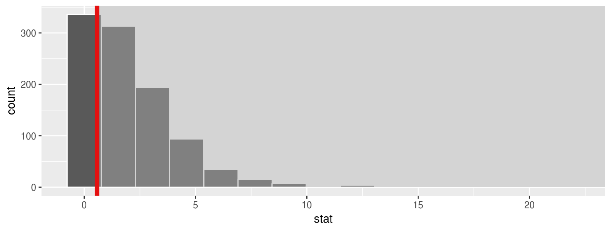
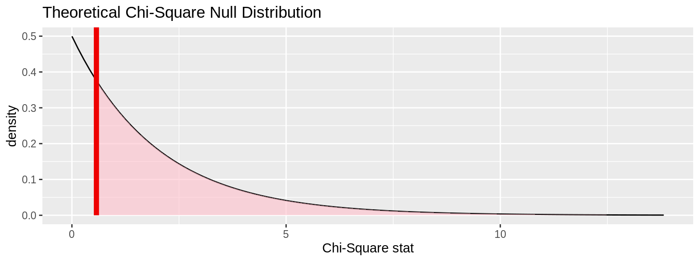
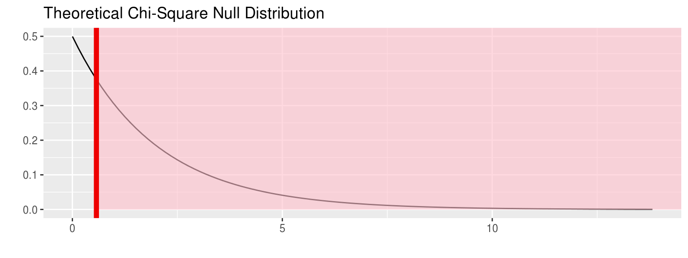
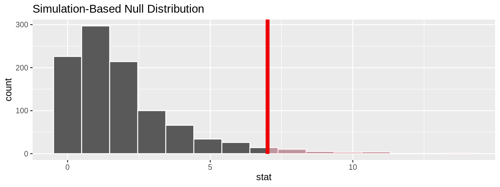
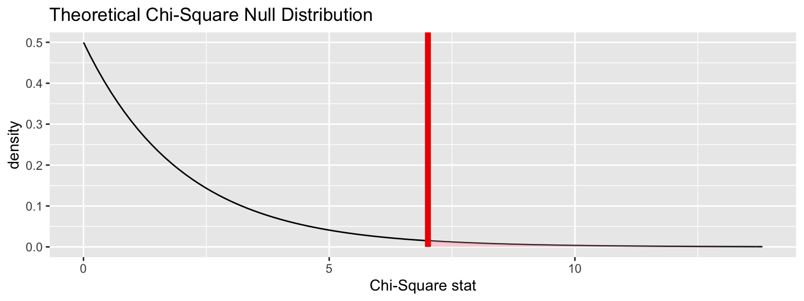
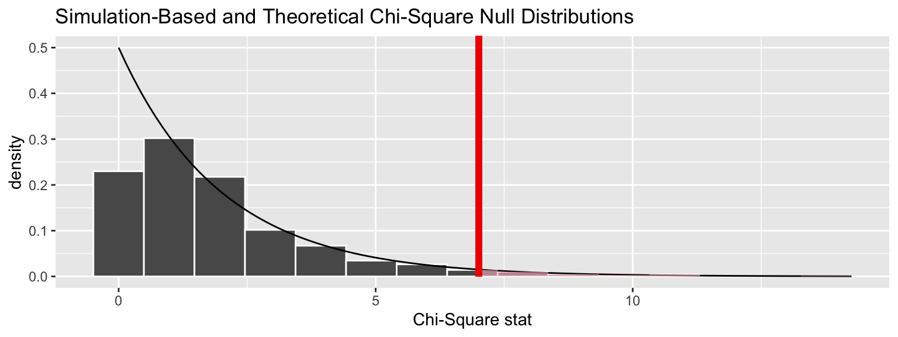

vignettes/chisq_test.Rmd
chisq_test.RmdNote: The type argument in generate() is automatically filled based on the entries for specify() and hypothesize(). It can be removed throughout the examples that follow. It is left in to reiterate the type of generation process being performed.
library(nycflights13)
library(dplyr)
library(ggplot2)
library(stringr)
library(infer)
set.seed(2017)
fli_small <- flights %>%
na.omit() %>%
sample_n(size = 500) %>%
mutate(season = case_when(
month %in% c(10:12, 1:3) ~ "winter",
month %in% c(4:9) ~ "summer"
)) %>%
mutate(day_hour = case_when(
between(hour, 1, 12) ~ "morning",
between(hour, 13, 24) ~ "not morning"
)) %>%
select(arr_delay, dep_delay, season,
day_hour, origin, carrier)arr_delay, dep_delay
season ("winter", "summer"),day_hour ("morning", "not morning")origin ("EWR", "JFK", "LGA")carrier
Say we wish to assess whether flights out of the three NYC airports have a seasonal component; whether La Guardia gets relatively more winter traffic, say, than JFK. This could be formulated as a test of independence between the origin (airport) and season variables.
The recommended approach is to use specify() %>% calculate():
obs_chisq <- fli_small %>%
specify(origin ~ season) %>% # alt: response = origin, explanatory = season
calculate(stat = "Chisq")The observed \(\chi^2\) statistic is 0.571898.
There also exists a shortcut:
Under the null hypothesis that origin is independent of season, we can simulate the distribution of \(\chi^2\) statistics.
chisq_null_perm <- fli_small %>%
specify(origin ~ season) %>% # alt: response = origin, explanatory = season
hypothesize(null = "independence") %>%
generate(reps = 1000, type = "permute") %>%
calculate(stat = "Chisq")
visualize(chisq_null_perm) +
shade_p_value(obs_stat = obs_chisq, direction = "greater")
chisq_null_theor <- fli_small %>%
specify(origin ~ season) %>%
hypothesize(null = "independence") %>%
# generate() ## Not used for theoretical
calculate(stat = "Chisq")
visualize(chisq_null_theor, method = "theoretical") +
shade_p_value(obs_stat = obs_chisq, direction = "right")## Warning: Check to make sure the conditions have been met for the theoretical
## method. {infer} currently does not check these for you.
We can also overlay the appropriate \(\chi^2\) distribution on top of permuted statistics.
visualize(chisq_null_perm, method = "both") +
shade_p_value(obs_stat = obs_chisq, direction = "right")## Warning: Check to make sure the conditions have been met for the theoretical
## method. {infer} currently does not check these for you.
The \(\chi^2\) is also useful for determining how different the observed distribution of a single categorical variable is from a proposed theoretical distribution. Let’s test the (trivial) null hypothesis that there is no variability in number of flights that leave from the three NYC area airports. Said another way, we hypothesize that a flat distribution over the airports is a good fit for our data.
chisq_null_perm <- fli_small %>%
specify(response = origin) %>%
hypothesize(null = "point",
p = c("EWR" = .33, "JFK" = .33, "LGA" = .34)) %>%
generate(reps = 1000, type = "simulate") %>%
calculate(stat = "Chisq")
visualize(chisq_null_perm) +
shade_p_value(obs_stat = obs_chisq, direction = "greater")
chisq_null_theor <- fli_small %>%
specify(response = origin) %>%
hypothesize(null = "point",
p = c("EWR" = .33, "JFK" = .33, "LGA" = .34)) %>%
calculate(stat = "Chisq")
visualize(chisq_null_theor, method = "theoretical") +
shade_p_value(obs_stat = obs_chisq, direction = "right")## Warning: Check to make sure the conditions have been met for the theoretical
## method. {infer} currently does not check these for you.
We can also overlay the appropriate \(\chi^2\) distribution on top of permuted statistics.
visualize(chisq_null_perm, method = "both") +
shade_p_value(obs_stat = obs_chisq, direction = "right")## Warning: Check to make sure the conditions have been met for the theoretical
## method. {infer} currently does not check these for you.